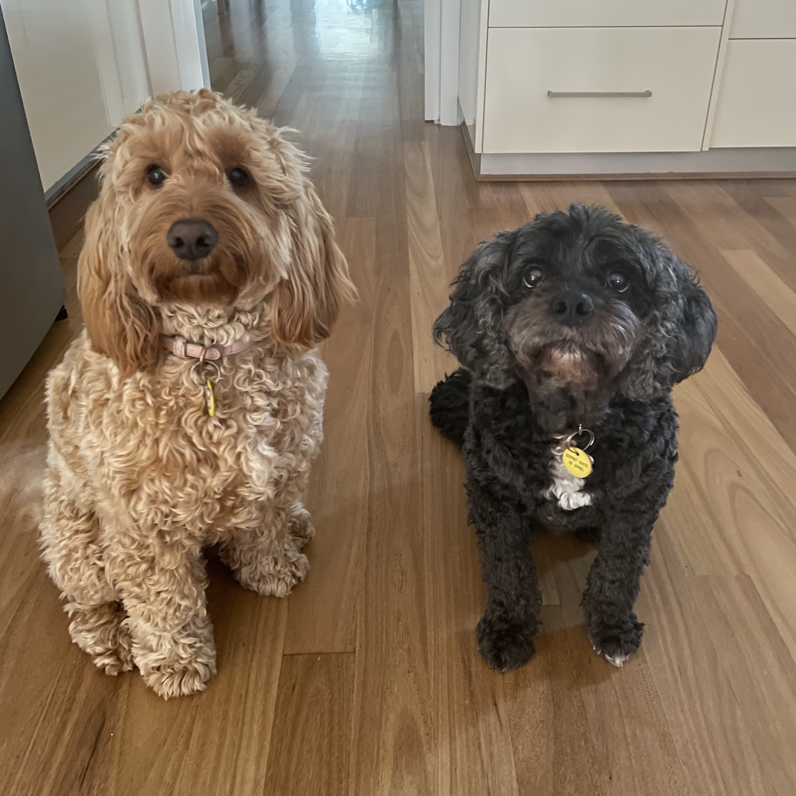

Personal Information
My name is Michael Owen Caldow and I’m a 23-years-old Australian high school graduate that currently works full time in a contact centre for a transport company. I have Italian and Spanish heritage and I speak English, Italian, and French. I’m hoping to add more spoken languages and programming languages to this list. I am the proud father of an 11-year-old black cavoodle named Pepsi and a 6-month-old golden cavoodle named Macy (pictured left).
In my spare time when I’m not caring for my dogs or working, I am passionate about running and learning other languages. For me running is stress relieving and allows me to decompress after a chaotic day. When I get some free time, I always aim to practice the languages that I already know. An interesting fact about me is that I am currently learning Portuguese, and I am aiming to become a polyglot. A polyglot is somebody that can communicate easily and effectively in 4 languages or more. I believe learning other languages allows you to develop a deeper appreciation of the world and other cultures. According to Nelson Mandela, “If you talk to a man in a language he understands, that goes to his head. If you talk to him in his own language, that goes to his heart” (Mandela, 1992)